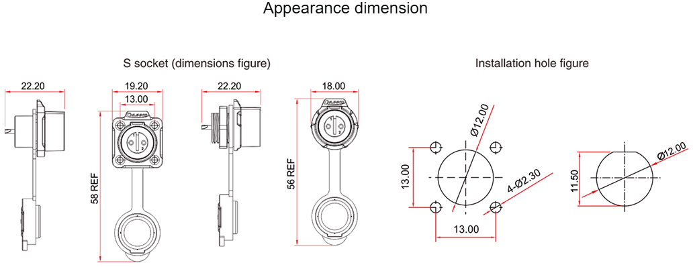
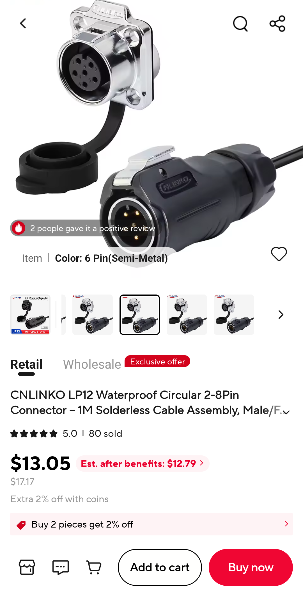

ST185, OPEN-ITEMS row 76 (binder M9 solder cups take AWG 24 max, VRC cables are 20 AWG). Claude Code, 2026-10-12. Chosen option is C.
docs/enclosures/hammond-1590WYFL.pdf)| Outside | 92.0 x 92.0 mm; body 38.0 mm tall + 4.0 mm lid = 42.0; mounting flange on the lid, 122.2 mm |
|---|---|
| Inside | 85.17 x 85.17 mm, 36.3 mm tall; floor 2.5 mm |
| Side wall | about 3.4 mm at the rim ((92.0 - 85.17) / 2). Hammond gives no draft angle, so the wall may be thicker lower down. Measure it before drilling. |
| Usable face per wall | about 85 mm wide x 38 mm tall from the outside. Two connectors (IN + OUT) fit side by side on one wall, or one on each opposite wall. |

Panel: LP-12-C05SX-02-101 (male, plastic, solder). Cable: LP-12-J05PE-02-001 (female, plastic, solder).
Fits except panel thickness, which can't be checked against a datasheet.

Panel: LP-12-C05SX-02-401. Cable: LP-12-J05PE-02-001.
Fully checked, but it's the flange style Dan likes less.
Panel: LP-16-C05SX-02-101. Cable: LP-16-J05PE-02-001.
Fully checked against CNLINKO's own drawing. Bigger than LP-12.
Cable: T4110011051-000 (M12 female, 5 pos, screw terminal, 18-24 AWG, IP67, PG7). Panel mate: TBD, not picked.
TE's page says this part is currently not available, and its metal shell is shielded (fine unused). Listed only for the TE-first rule.
te-on-hand-bom.csv are shell size 18/24 with heavy contacts, and there is only one pair of each.C: LP-16 jam nut. Cable plug LP-16-J05PE-02-001 x4, panel socket LP-16-C05SX-02-101 x4. Dan remembered the cutout as 18 mm / 16 mm across the flats, which matches LP-16 (CNLINKO: 18.5 / 16.5).
C (LP-16 jam nut) if jam nut is a must, because it is the only jam-nut option fully checked against a datasheet. A (LP-12 jam nut) if Dan accepts measuring the thread on the first part and spot-facing the inside of the wall if it's short. B if the flange is OK.